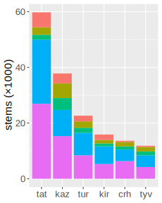
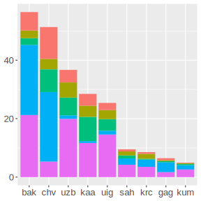
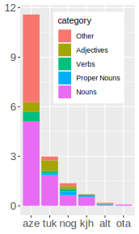
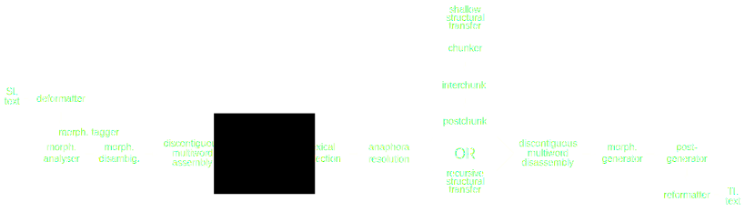

Free/Open-Source technologies
for Turkic languages
developed in the Apertium project
for Turkic languages
developed in the Apertium project
Jonathan N. Washington¹ · Ilnar Salimzianov² · Francis M. Tyers³
Memduh Gökırmak⁴ · Sardana Ivanova⁵ · Oğuzhan Kuyrukçu⁶
- Swarthmore College, USA
- Kazan, Tatarstan
- Indiana University, USA; Высшая Школа Экономики, Москва
- Univerzita Karlova, Praha
- Helsingin yliopisto, Helsinki
- Boğaziçi Üniversitesi, İstanbul
Overview
We present a collection of Free/Open-Source
morphological transducers and machine translation systems
for Turkic languages.
morphological transducers and machine translation systems
for Turkic languages.
- Motivation for:
- Turkic language technology
- Symbolic approaches
- Free/Open-Source Software
- Morphological transducers for Turkic languages
- Machine translation systems for Turkic languages
- Future work:
- Morphological transducers
- Machine translation systems
Motivation: Turkic language technology
- Official status ≠ future survival
- Language technology necessary for a language to survive digital age
- Situation of Turkic languages:
- ⅓ of languages officially considered endangered
- Very little support for language technology
- What can we do about the current situation?
"only" ⅓ of 7000 languages are endangered,
but only 5% have sufficient level of access to language technology
(Kornai, 2013)
"We live during a brief period of overlap between the mass extinction of the
world’s languages and the advent of the digital age." — Bird (2009)
Motivation: Symbolic approaches
- Symbolic vs. corpus-based (neural, statistical)
- Symbolic approaches encode linguistic generalisation
- Advantages:
- No requirement for giant corpora
- More precise than corpus-based
- Easy to fix errors and expand coverage
- Lots of "free rides" for related languages
- Only need knowledge of language, not mathematics and programming
- Disadvantages:
- ...Need knowledge of language, not mathematics and programming
- Takes time to develop
- I.e., community-maintainable
Motivation: Free/Open-Source Software
Free = бесплатно + свободно
Open = открыто + доступно
Open = открыто + доступно
- Available for anyone to use or modify
- Support from developers
- Robust community (Apertium)
- I.e., accessible to community
Morphological transducers: Uses
Example:
Main uses:
| Input / Output: | Алмасы |
|---|---|
| Output / Input: |
алма алмас Алма Алмас ал ал ал ал |
Main uses:
- Spell checkers
- Component of machine translation systems
- Language-learning systems (e.g., Revita, revita.cs.helsinki.fi)
- Whatever else you can imagine
Morphological transducers: Languages

Production-level
92%-98% coverage
(Tatar , Kazakh , Turkish , Kyrgyz , Crimean Tatar , Tuvan )
92%-98% coverage
(

Working
88-93% coverage
(Bashqort , Chuvash, Uzbek, Qaraqalpaq, Uyghur, Sakha , Karachay-Balkar, Gagauz , Kumyk )
88-93% coverage
(

Prototype
<80% coverage
(Azerbaycani, Turkmen, Noghay, Khakas, Altay, Ottoman)
<80% coverage
(Azerbaycani, Turkmen, Noghay, Khakas, Altay, Ottoman)
Machine translation systems
- Main uses:
- Saving translators time: MT then post-editing
- Assisting a speaker of one langage to understand material written in another language
Making production-ready legal documents, literature, marketing materials, etc.- Examples:
- Crimean Tatar speaker wants to read Turkish news website
- Amateur translator wants to quickly translate Turkish Wikipedia articles for Crimean Tatar Wikipedia
Machine translation pairs
| Turkic-Turkic | ||
| 57510 | ||
| chv | tur | 31946 |
| chv | tat | 29512 |
| uzb | kaa | 19369 |
| uig | tur | 10194 |
| 9956 | ||
| tur | aze | 8211 |
| kaz | kir | 8177 |
| tur | kir | 7824 |
| 7636 | ||
| 7140 | ||
| kaz | kaa | 5425 |
| tur | uzb | 4359 |
| tur | tat | 4272 |
| kaz | sah | 2890 |
| kaz | uig | 2727 |
| kaz | kum | 563 |
| kir | uzb | 323 |
| kaz | tyv | 159 |
| with non-Turkic languages | ||
| eng | kaz | 33002 |
| kaz | rus | 29777 |
| tat | eng | 14985 |
| tat | rus | 6036 |
| eng | kir | 368 |
| khk | kaz | 140 |
Machine translation systems: How
- Standard Apertium RBMT pipeline 
- Any element may be
- augmented by statistical methods
- replaced with corpus-based model (statistical, neural)
Machine translation systems: example
- input:
yahşı vaqıt edi - morphological analysis: ^yahşı/yahşı
adj /yahşıadj subst nom /yahşıadj +ecop aor p3 sg /yahşıadj subst nom +ecop aor p3 sg $ ^vaqıt/vaqıtn nom /vaqıtn attr /vaqıtn nom +ecop aor p3 sg $ ^edi/ecop ifi p3 sg /evaux ifi p3 sg $^./.sent $ - disambiguation: ^yahşı/yahşı
adj $ ^vaqıt/vaqıtn nom $ ^edi/ecop ifi p3 sg $^./.sent $ - lexical transfer: ^yahşı
adj /iyiadj $ ^vaqıtn nom /vakitn nom /süren nom $ ^ecop ifi p3 sg /icop ifi p3 sg $^.sent /.sent $ - lexical selection:
- structural transfer: ^iyi
adj $ ^vakitn nom +icop ifi p3 sg $ - morphological generation:
iyi vakitti
^yahşıadj /iyiadj $ ^vaqıtn nom /vakitn nom $ ^ecop ifi p3 sg /icop ifi p3 sg $^.sent /.sent $
Lexical selection: example
vaqıt crh →vakit tur time bir vaqıt crh →bir süre tur (for) some time
Lexical transfer:
<e><p><l>vaqıt<s n="n"/></l><r>vakit<s n="n"/></r></p></e>
<e><p><l>vaqıt<s n="n"/></l><r>süre<s n="n"/></r></p></e>
<e><p><l>vaqıt<s n="n"/></l><r>süre<s n="n"/></r></p></e>
Lexical selection:
<rule weight="1.2">
<match lemma="bir"/>
<match lemma="vaqıt" tags="n.*">
<select lemma="süre" tags="n.*"/>
</match>
</rule>
<rule weight="1.0">
<match lemma="vaqıt" tags="n.*">
<select lemma="vakit" tags="n.*"/>
</match>
</rule>
<match lemma="bir"/>
<match lemma="vaqıt" tags="n.*">
<select lemma="süre" tags="n.*"/>
</match>
</rule>
<rule weight="1.0">
<match lemma="vaqıt" tags="n.*">
<select lemma="vakit" tags="n.*"/>
</match>
</rule>
Structural transfer: example
barğan soñ crh →gittikten sonra tur after going - ^bar<v><iv><ger_past><nom>$ ^soñ<post>$
crh →
^git<v><iv><ger_past><abl>$ ^sonra<post>$tur
<rule comment="REGLA: GAn soñ ">
<pattern>
<pattern-item n="ger_past"/>
<pattern-item n="soñ"/>
</pattern>
<action>
<call-macro n="f_strip_tags"><with-param pos="1"/></call-macro>
<let>
<clip pos="1" side="tl" part="a_cas"/>
<lit-tag v="abl"/>
</let>
<out><chunk name="n" case="caseSecondWord">
<tags><tag><lit-tag v="SP"/></tag></tags>
<lu><clip pos="1" side="tl" part="whole"/></lu>
<b/>
<lu><clip pos="2" side="tl" part="whole"/></lu>
</chunk></out>
</action>
</rule>
<pattern>
<pattern-item n="ger_past"/>
<pattern-item n="soñ"/>
</pattern>
<action>
<call-macro n="f_strip_tags"><with-param pos="1"/></call-macro>
<let>
<clip pos="1" side="tl" part="a_cas"/>
<lit-tag v="abl"/>
</let>
<out><chunk name="n" case="caseSecondWord">
<tags><tag><lit-tag v="SP"/></tag></tags>
<lu><clip pos="1" side="tl" part="whole"/></lu>
<b/>
<lu><clip pos="2" side="tl" part="whole"/></lu>
</chunk></out>
</action>
</rule>
Future work
- Revised Apertium RBMT pipeline 
- Additional optional elements:
- Multiwords and separable expressions (2017)
- Anaphora resolution
- Recursive structural transfer
Sağ oluñız! / Сагъ олунъыз!
Special thanks to:
- Hèctor Alòs i Font, Kantörö Erkulov, Gianluca Grossi, Sharapat Kalabaev, Mansur Saykhunov, Beknazar Abdikamalov, Akın Dalkı, Ağarahim Sultanmuradov, Tolgonay Kubatova, Remziye Berberova, Darya Kavitskaya, and Nick Howell
(contributed to the development of these systems) - the Google Summer of Code program
- the Google Code-In program
- the Apertium open source community